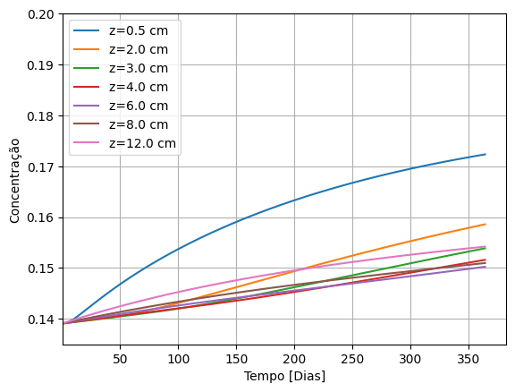
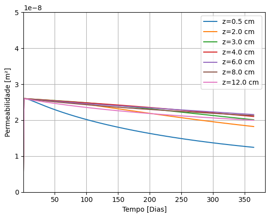
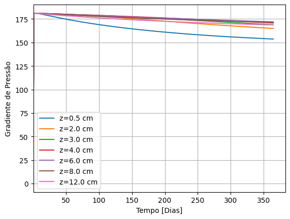

Exemplo de simulação HPHT (efeito da pressão hidrostática)#
Arquivo de configuração
[1]:
from modules.simulation.config.model import SimulationConfigModel
import pathlib
cfg_path = pathlib.Path("./fixtures/HPHT_config_pressure.yaml")
cfg = SimulationConfigModel.from_file(cfg_path)
cfg
[1]:
SimulationConfigModel(sim_name='HPHT_simulation_pressure', domain=DomainModel(height=0.21, spatial_divisions=220), suspension=SuspensionModel(initial_conc=0.1391, max_conc=0.19), solid_phase=SolidPhaseModel(particle_diam=4.08e-05, particle_esphericity=0.8, density=2709.0), fluid_phase=FluidPhaseModel(density=891.4, power_law=PowerLawFluidModel(M=30.13, n=0.21)), simulation_parameters=SimulationParameters(timestep=1000.0, total_time=31536000.0), export=FrequencyConfig(frequency=100), report=FrequencyConfig(frequency=1000), HPHT=HPHTModel(temperature=None, pressure=HPHTPressureModel(model='exponential', reference_pressure=0.0, viscosity_factor=-0.0002)), equation_parameters=EquationParameters(delta=0.58, k0=27.99, beta=0.19, ref_conc=0.14, p_ref=18.62))
Instantiate Results Handler
[2]:
from modules.simulation.sim_handler import SimulationHandler
output_path = pathlib.Path(f"./out/{cfg.sim_name}")
sim_handler = SimulationHandler(cfg=cfg, output_path=output_path)
Run simulation
[3]:
import time
start = time.time()
sim_handler.start_simulation()
end = time.time()
print("\nTempo total de simulação:" + str(end - start) + " [s]")
print("Status da simulação: " + sim_handler.sim_status)
[2024-05-06 17:51:12,926] [INFO] - simulation - Starting simulation... (sim_handler.py:65)
[2024-05-06 17:51:12,927] [INFO] - simulation - Current time 0 (sim_handler.py:66)
[2024-05-06 17:51:13,555] [INFO] - simulation - Simulation report: Current time 1000000.0 (sim_handler.py:56)
[2024-05-06 17:51:14,170] [INFO] - simulation - Simulation report: Current time 2000000.0 (sim_handler.py:56)
[2024-05-06 17:51:14,789] [INFO] - simulation - Simulation report: Current time 3000000.0 (sim_handler.py:56)
[2024-05-06 17:51:15,416] [INFO] - simulation - Simulation report: Current time 4000000.0 (sim_handler.py:56)
[2024-05-06 17:51:16,037] [INFO] - simulation - Simulation report: Current time 5000000.0 (sim_handler.py:56)
[2024-05-06 17:51:16,658] [INFO] - simulation - Simulation report: Current time 6000000.0 (sim_handler.py:56)
[2024-05-06 17:51:17,299] [INFO] - simulation - Simulation report: Current time 7000000.0 (sim_handler.py:56)
[2024-05-06 17:51:17,913] [INFO] - simulation - Simulation report: Current time 8000000.0 (sim_handler.py:56)
[2024-05-06 17:51:18,531] [INFO] - simulation - Simulation report: Current time 9000000.0 (sim_handler.py:56)
[2024-05-06 17:51:19,153] [INFO] - simulation - Simulation report: Current time 10000000.0 (sim_handler.py:56)
[2024-05-06 17:51:19,775] [INFO] - simulation - Simulation report: Current time 11000000.0 (sim_handler.py:56)
[2024-05-06 17:51:20,393] [INFO] - simulation - Simulation report: Current time 12000000.0 (sim_handler.py:56)
[2024-05-06 17:51:21,014] [INFO] - simulation - Simulation report: Current time 13000000.0 (sim_handler.py:56)
[2024-05-06 17:51:21,638] [INFO] - simulation - Simulation report: Current time 14000000.0 (sim_handler.py:56)
[2024-05-06 17:51:22,267] [INFO] - simulation - Simulation report: Current time 15000000.0 (sim_handler.py:56)
[2024-05-06 17:51:22,891] [INFO] - simulation - Simulation report: Current time 16000000.0 (sim_handler.py:56)
[2024-05-06 17:51:23,512] [INFO] - simulation - Simulation report: Current time 17000000.0 (sim_handler.py:56)
[2024-05-06 17:51:24,142] [INFO] - simulation - Simulation report: Current time 18000000.0 (sim_handler.py:56)
[2024-05-06 17:51:24,766] [INFO] - simulation - Simulation report: Current time 19000000.0 (sim_handler.py:56)
[2024-05-06 17:51:25,396] [INFO] - simulation - Simulation report: Current time 20000000.0 (sim_handler.py:56)
[2024-05-06 17:51:26,018] [INFO] - simulation - Simulation report: Current time 21000000.0 (sim_handler.py:56)
[2024-05-06 17:51:26,634] [INFO] - simulation - Simulation report: Current time 22000000.0 (sim_handler.py:56)
[2024-05-06 17:51:27,279] [INFO] - simulation - Simulation report: Current time 23000000.0 (sim_handler.py:56)
[2024-05-06 17:51:27,900] [INFO] - simulation - Simulation report: Current time 24000000.0 (sim_handler.py:56)
[2024-05-06 17:51:28,514] [INFO] - simulation - Simulation report: Current time 25000000.0 (sim_handler.py:56)
[2024-05-06 17:51:29,136] [INFO] - simulation - Simulation report: Current time 26000000.0 (sim_handler.py:56)
[2024-05-06 17:51:29,757] [INFO] - simulation - Simulation report: Current time 27000000.0 (sim_handler.py:56)
[2024-05-06 17:51:30,375] [INFO] - simulation - Simulation report: Current time 28000000.0 (sim_handler.py:56)
[2024-05-06 17:51:30,999] [INFO] - simulation - Simulation report: Current time 29000000.0 (sim_handler.py:56)
[2024-05-06 17:51:31,622] [INFO] - simulation - Simulation report: Current time 30000000.0 (sim_handler.py:56)
[2024-05-06 17:51:32,245] [INFO] - simulation - Simulation report: Current time 31000000.0 (sim_handler.py:56)
Tempo total de simulação:19.653536796569824 [s]
Export data
[4]:
sim_handler.export_sim_data()
sim_handler.export_domain_polydata(frequency_reduction=100)
Read simulation data#
[5]:
from modules.analysis.results_handler import ResultsHandler
import pathlib
output_path = pathlib.Path(f"./out/{cfg.sim_name}")
results_handler = ResultsHandler(simulation_path=output_path)
Plot concentration
[6]:
import matplotlib.pyplot as plt
target_positions = [0.005, 0.02, 0.03, 0.04, 0.06, 0.08, 0.12]
time, concentration_profiles = results_handler.filter_for_positions(variable_name="Concentration", position_values=target_positions)
for position_lbl, concentration_arr in concentration_profiles.items():
plt.plot(time / (3600 * 24), concentration_arr, label=position_lbl)
plt.xlabel('Tempo [Dias]')
plt.xlim(0.400)
plt.ylabel('Concentração')
plt.ylim(0.135,0.2)
plt.grid()
plt.legend()
plt.show()

Plot permeability
[7]:
import matplotlib.pyplot as plt
target_positions = [0.005, 0.02, 0.03, 0.04, 0.06, 0.08, 0.12]
time, perm_profiles = results_handler.filter_for_positions(variable_name="Permeability", position_values=target_positions)
for position_lbl, perm_arr in perm_profiles.items():
plt.plot(time / (3600 * 24), perm_arr, label=position_lbl)
plt.xlabel('Tempo [Dias]')
plt.xlim(0.400)
plt.ylabel('Permeabilidade [m²]')
plt.ylim(0,5e-8)
plt.grid()
plt.legend()
plt.show()

Plot pressure gradient
[8]:
import matplotlib.pyplot as plt
target_positions = [0.005, 0.02, 0.03, 0.04, 0.06, 0.08, 0.12]
time, pressure_grad_profiles = results_handler.filter_for_positions(variable_name="Pressure_Gradient", position_values=target_positions)
for position_lbl, pressure_grad in pressure_grad_profiles.items():
plt.plot(time / (3600 * 24), pressure_grad, label=position_lbl)
plt.xlabel('Tempo [Dias]')
plt.xlim(0.400)
plt.ylabel('Gradiente de Pressão')
plt.grid()
plt.legend()
plt.show()
